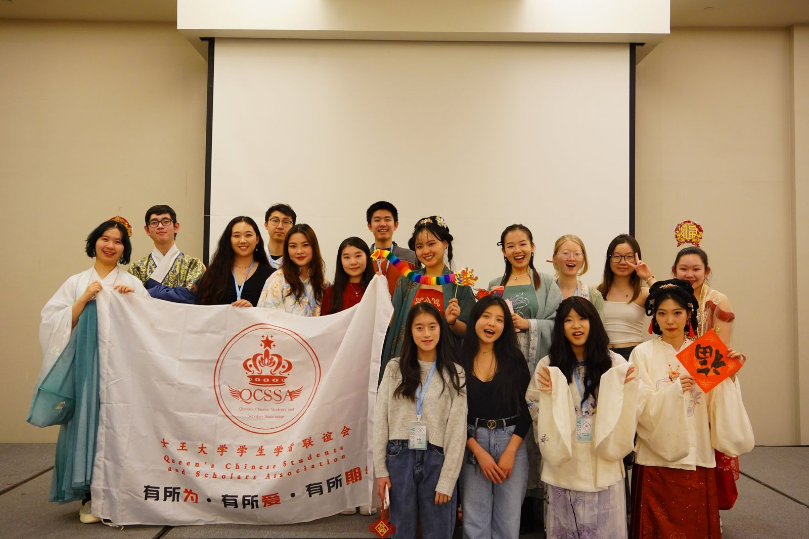
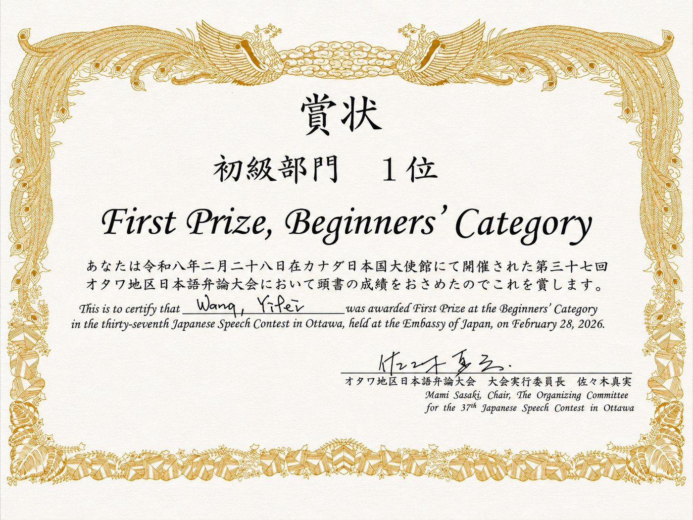
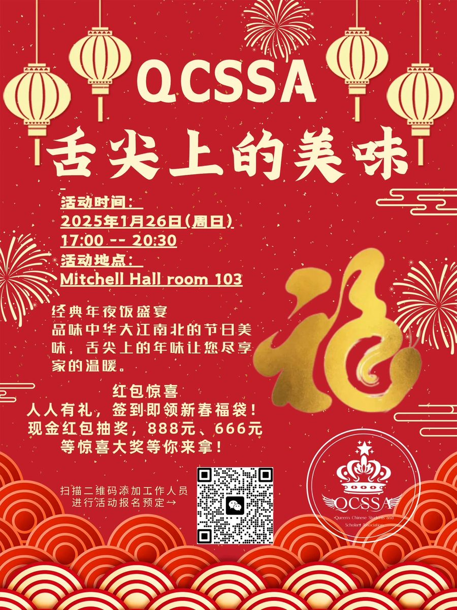

QCSSA events: from poster to roomQCSSA 活动：从海报到现场
Events of about 200 people. I helped plan and run them, hosted in Chinese and English, and led the marketing team that promoted them.
每场约 200 人的活动。我参与统筹和现场执行，用中英双语主持，也带着市场部给这些活动做宣传。

Events of about 200 people. I helped plan and run them, hosted in Chinese and English, and led the marketing team that promoted them.
每场约 200 人的活动。我参与统筹和现场执行，用中英双语主持，也带着市场部给这些活动做宣传。


First Prize in the beginners’ category, held at the Embassy of Japan.
初级组一等奖，比赛在日本大使馆举行。

Electric guitar and lead vocals in a Kingston band that plays Britpop, pop rock and funk.
我在金斯顿乐队 DeADline 弹电吉他、唱主唱，风格偏 Britpop、流行摇滚和放克。

Full character looks, from costume and wig to makeup, for conventions, contests and photo shoots.
从服装、假发到妆面整套还原角色，参加漫展、比赛和外拍。


Two months with an adolescent psychology team: comparing qualitative studies on family mental health, and organizing literature and survey data.
在青少年心理团队实习两个月：比较家庭心理健康方向的三项质性研究，也整理文献和问卷数据。

Makeup for cosplay characters, photo shoots and events, including client bookings in Kingston.
为 cosplay 角色、拍摄和活动化妆，也在金斯顿接客人预约。

A five-person cognitive psychology experiment: 50 participants, five rounds of recall data.
五人小组完成的认知心理学实验：50 名参与者，5 轮回忆数据。

Campus ambassador work: events, info booths, applicant questions and program comparison reports.
校园大使的日常：办活动、摆摊、回答申请问题、写项目对比报告。


The entry course of KnowYourself’s counsellor training, then six practice cases read through several schools of therapy.
KnowYourself 聊愈师培养计划的入门课程。之后我从几个流派出发，分析了六个练习案例。

Essays from my Film and Media minor, including Digital Media Theory, World Cinemas and Culture and Technology.
电影与媒体辅修课上的论文，课程包括数字媒体理论、世界电影、文化与技术。
Posters and articles were half the job. The other half happened on the day: schedules, equipment, on-site logistics, and a microphone in two languages.
做海报和推送只是一半工作，另一半在活动当天：排期、设备、现场执行，还有中英双语主持。





I entered as a beginner and gave a prepared speech in Japanese, written and rehearsed with guidance from Keiko Aoki at Queen’s University.
我以初学者身份参赛，在皇后大学 Keiko Aoki 老师的指导下写稿、排练，完成了一场日语演讲。
DeADline is a band based in Kingston. I play electric guitar, share lead vocals and sometimes cover keyboard.
DeADline 是金斯顿本地的乐队。我弹电吉他，和队友轮流唱主唱，有时也弹键盘。

A costume has to read clearly from across a convention hall and still hold up in a close-up photo.
一套 cos 既要在漫展大厅另一头一眼认得出，也要经得起近距离拍照。
Selected characters: Kita Ikuyo, Makima, Power, Reze, Hatsune Miku, Kasane Teto, Misa Amane, Jolyne Cujoh, Neon Nostrade and Utena Tenjou.
出过的部分角色：喜多郁代、玛奇玛、帕瓦、蕾塞、初音未来、重音 Teto、弥海砂、空条徐伦、妮翁、天上欧蒂娜。


I compared how three qualitative studies designed their interviews and analyzed their data, then wrote a report pulling together what they found about family mental health.
我对比了三项质性研究在访谈设计和数据分析上的做法，再把它们关于家庭心理健康的发现写成一份报告。
I also organized literature and survey data for adolescent psychology research and brought my observations on adolescent stress and coping to team discussions.
我还为青少年心理研究整理文献和问卷数据，并在组会上分享对青少年压力与应对方式的观察。
“When we talked about the psychological pressure of adolescents, she combined the knowledge she had learned and the cases she had come into contact with to analyze the possible causes and put forward some constructive suggestions.”“我们讨论青少年心理压力时，她结合所学知识和接触过的案例分析可能的原因，并提出了一些建设性的建议。”
“She is very empathetic, which is particularly important in the field of adolescent psychology.”“她很有同理心，这在青少年心理领域尤其重要。”
“I strongly recommend her to your graduate program without any reservation.”“我毫无保留地向贵项目推荐她。”
What I wrote at the end of the internship (WeChat article, in Chinese)实习结束时我写的感言（公众号文章）
Character makeup means turning a 2D design into a look that works on a real face, under real light and on camera.
角色妆要把二维设计搬到真人脸上，在真实光线和镜头下也要成立。
To book, email me the date, the look you want and a reference image.
想预约的话，发邮件告诉我日期、想要的妆面，再附一张参考图。


Booking: 预约方式见contact page联系页面

The job is part event promotion and part advising: I explain programs and the application process to prospective students and answer their questions.
这份工作一部分是活动推广，一部分是咨询：给有意向的同学讲解项目和申请流程，回答他们的问题。
I also write comparative reports on summer-school programs to inform positioning, recruitment messaging and outreach plans.
我也写暑期项目对比报告，给项目定位、招生文案和推广计划做参考。
Seed Plan is the entry course of KnowYourself’s training programme for counsellors who give chat-based support on its Yueshi app. It is open to beginners: you take the course first, then decide whether to apply.
萌芽计划是 KnowYourself（KY）聊愈师培养计划的入门课程。聊愈师在 KY 旗下的“月食”App 上提供即时聊天支持。课程零基础可报，先体验，再决定要不要报名成为聊愈师。
After the written exam came a phone interview: the interviewer plays the client from one of six cases, and you run a 10-minute first session. To prepare, I wrote a case conceptualization for each case.
笔试之后是电话面试：面试官从六个案例中抽一个扮演来访者，面试者完成 10 分钟的首次咨询。准备时，我给每个案例都写了个案概念化。
These courses ask the same question as my psychology work: how images, platforms and stories shape attention and judgement.
这些课和我的心理学方向问的是同一个问题：图像、平台和故事怎样影响人的注意和判断。
Writing samples are available on request. Email me and I’ll send PDFs.
需要写作样本的话，发邮件给我，我把 PDF 发过去。